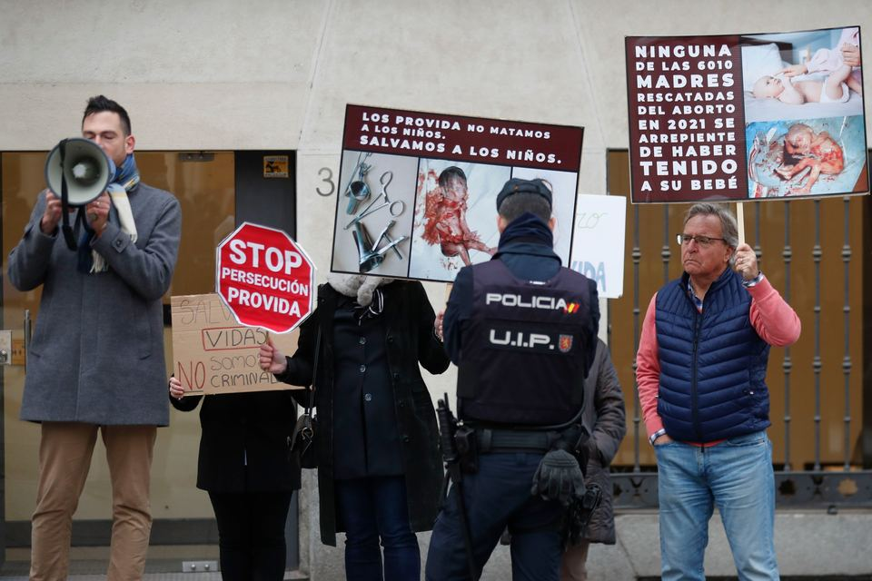

El futuro del aborto: entre garantizar el derecho en la Constitución y recortarlo a las menores

Vox, que siempre ha abogado por vetar la interrupción voluntaria del embarazo de la sanidad pública, está eludiendo el debate; el PP no la nombra en su programa y la izquierda quiere blindarla
El aborto en España puede sufrir restricciones tras las próximas elecciones. Pero es un derecho que, sin entrar en matices, no está en juego. No, al menos, si se atiende a lo que proponen los principales partidos: ninguno, ni siquiera Vox, amenaza explícitamente con eliminarlo. En cambio, los partidos de izquierdas ―tanto PSOE como Frente Amplio―, quieren consagrarlo como derecho constitucional .